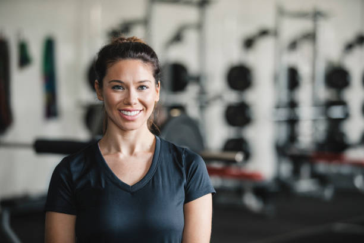

John believes in a holistic approach to fitness that emphasizes both mental and physical health. He encourages balanced nutrition, proper recovery, and sustainable training methods. His ideology focuses on long-term progress and creating individualized plans to help clients achieve their unique goals.
Jane’s training ideology revolves around the integration of mind and body. She believes that physical fitness is not only about strength but also about cultivating inner peace and mental clarity. Through yoga, meditation, and mindful movements, she helps her clients achieve mental and emotional balance alongside their physical goals.

Mark’s ideology is rooted in the belief that fitness is a journey of self-improvement. He emphasizes the importance of a healthy diet and balanced lifestyle, alongside regular exercise. He encourages clients to push beyond their limits and focus on sustainable results, rather than quick fixes or temporary changes.